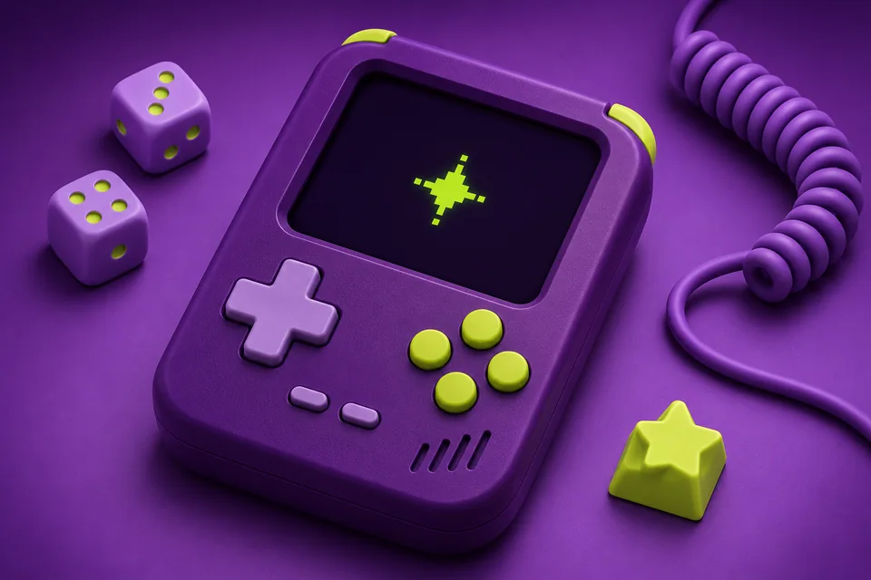

Game design
We sketch and prototype the smallest playable version of an idea. The way a jump lands or a turn feels helps us decide where to go next.
About Venin Games
We’re an independent game studio. Each world starts with one idea that feels good to play, then grows through prototyping, art, and playtesting.

We find the fun early and let it guide the world we build around it.
We sketch and prototype the smallest playable version of an idea. The way a jump lands or a turn feels helps us decide where to go next.
We give each world its own rules and surprises. Players learn them by exploring, experimenting, and sometimes taking the long way around.
We use color, light, and motion to give each world a distinct feel and make important details easy to spot while playing.
Tell us about the game, world, or idea you’d like to make.